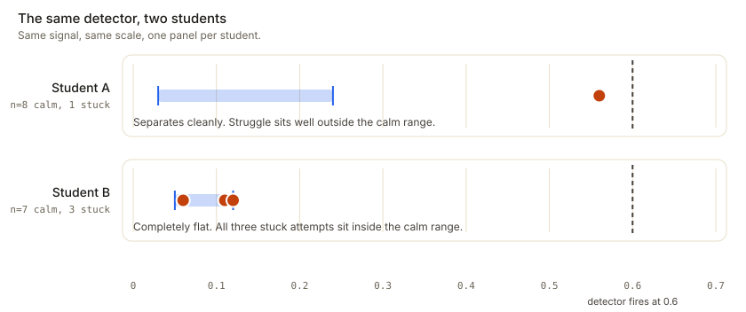

Build a tutor that can see the page.
A small team in Milan with more open problems than we can get through: handwriting that reads as human, a model of each student built from how the pen moves, and a tutor that knows when to hold back.
Klera is one line
The character in the app is a single line traced from the logo. It reshapes itself to think, to write and to mark a mistake. What you see here is exported frame by frame from the app's own Swift code and only drawn by your browser.
Three hard problems
None of them is getting a model to answer maths.
Handwriting that reads as human
Synthesised strokes look synthesised. Klera draws from captured human strokes placed into a mathematical layout, and varies the hand the way a real writer does: slowly, across a line, not glyph by glyph.
Knowing when to hold back
The hardest thing in tutoring is not answering. Deciding when a student is ready to write the next line themselves needs the problem, their state, and how well we know them yet. When unsure, show.
Refusing a wrong picture
Generating a diagram is easy. A confidently wrong one teaches something false. Trusted templates come first, generated visuals must pass checks, and the floor never invents maths.
Why every student gets their own baseline
A measurement from a real iPad, not a model.
The obvious design is a global threshold: this much pressure means stress. For one student, being stuck shows up as pressing harder. For another, pressure is flat, and being stuck shows up as going still before the pen touches the page.
- Calm attempts, measured range
- Genuinely stuck attempts

Five principles
Every design decision traces back to one of these.
01
Ink, not text
The tutor's answer must be erasable, selectable ink on the student's own canvas, in the same coordinate space. A rendered string or a video does not belong to the page.
02
The individual, not the population
Every signal is read against the student's own normal. A threshold that works on the average student is wrong for most real ones.
03
Fusion, not a detector
No single signal is allowed to decide anything. Each is weak and noisy on its own; accuracy comes from the combination.
04
Withhold by default
The hardest thing in tutoring is not answering. When uncertain, show; when confident a student is ready, make them do it.
05
Refuse rather than mislead
A confidently wrong diagram or a wrong verdict teaches something false. Every generative step can be refused, and the floor cannot fail.
Come and work on this
No formal posting and no process. A short email about what you've built is plenty.
AI and applied modelling
The tutoring loop, silent checking of work nobody asked about, and calibrated problem generation. Getting a model to withhold the answer correctly.
Data and learning science
Per-student baselines, evidence fusion, and study design that lets us change a model without fitting it to noise.
Something we haven't thought of
Tell us which part of this page you think is wrong, and how you'd fix it.
Research we build on
None of these ideas are ours. Making them work on a live canvas is.
Flow
Csikszentmihalyi. Learning happens when challenge sits just above skill.
Zone of proximal development
Vygotsky. The next problem should be reachable with a little help.
Productive failure
Kapur; Bjork. Struggle that ends in progress is the goal.
The assistance dilemma
Koedinger and Aleven. Too much help and too little both hurt.
Confusion in learning
D'Mello and Graesser. Confusion that resolves helps; confusion that doesn't becomes frustration.
Self-determination
Deci and Ryan. Autonomy and competence sustain motivation; scores and streaks crowd it out.